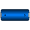

BodyCylinderRigid body with cylinder shape. Mass and animation properties are computed from cylinder data and density (12 potential states) |

|
Diagram

Information
This information is part of the Modelica Standard Library maintained by the Modelica Association.
Rigid body with cylinder shape. The mass properties of the body (mass, center of mass, inertia tensor) are computed from the cylinder data. Optionally, the cylinder may be hollow. The cylinder shape is by default used in the animation. The two connector frames frame_a and frame_b are always parallel to each other. Example of component animation (note, that the animation may be switched off via parameter animation = false):

A BodyCylinder component has potential states. For details of these states and of the "Advanced" menu parameters, see model MultiBody.Parts.Body.
Parameters (27)
| animation |
Value: true Type: Boolean Description: = true, if animation shall be enabled (show cylinder between frame_a and frame_b) |
|---|---|
| r |
Value: Type: Position[3] (m) Description: Vector from frame_a to frame_b, resolved in frame_a |
| r_shape |
Value: {0, 0, 0} Type: Position[3] (m) Description: Vector from frame_a to cylinder origin, resolved in frame_a |
| lengthDirection |
Value: to_unit1(r - r_shape) Type: Axis Description: Vector in length direction of cylinder, resolved in frame_a |
| length |
Value: Modelica.Math.Vectors.length(r - r_shape) Type: Length (m) Description: Length of cylinder |
| diameter |
Value: length / world.defaultWidthFraction Type: Distance (m) Description: Diameter of cylinder |
| innerDiameter |
Value: 0 Type: Distance (m) Description: Inner diameter of cylinder (0 <= innerDiameter <= Diameter) |
| density |
Value: 7700 Type: Density (kg/m³) Description: Density of cylinder (e.g., steel: 7700 .. 7900, wood : 400 .. 800) |
| angles_fixed |
Value: false Type: Boolean Description: = true, if angles_start are used as initial values, else as guess values |
| angles_start |
Value: {0, 0, 0} Type: Angle[3] (rad) Description: Initial values of angles to rotate world frame around 'sequence_start' axes into frame_a |
| sequence_start |
Value: {1, 2, 3} Type: RotationSequence Description: Sequence of rotations to rotate world frame into frame_a at initial time |
| w_0_fixed |
Value: false Type: Boolean Description: = true, if w_0_start are used as initial values, else as guess values |
| w_0_start |
Value: {0, 0, 0} Type: AngularVelocity[3] (rad/s) Description: Initial or guess values of angular velocity of frame_a resolved in world frame |
| z_0_fixed |
Value: false Type: Boolean Description: = true, if z_0_start are used as initial values, else as guess values |
| z_0_start |
Value: {0, 0, 0} Type: AngularAcceleration[3] (rad/s²) Description: Initial values of angular acceleration z_0 = der(w_0) |
| enforceStates |
Value: false Type: Boolean Description: = true, if absolute variables of body object shall be used as states (StateSelect.always) |
| useQuaternions |
Value: true Type: Boolean Description: = true, if quaternions shall be used as potential states otherwise use 3 angles as potential states |
| sequence_angleStates |
Value: {1, 2, 3} Type: RotationSequence Description: Sequence of rotations to rotate world frame into frame_a around the 3 angles used as potential states |
| radius |
Value: diameter / 2 Type: Distance (m) Description: Radius of cylinder |
| innerRadius |
Value: innerDiameter / 2 Type: Distance (m) Description: Inner-Radius of cylinder |
| mo |
Value: density * pi * length * radius * radius Type: Mass (kg) Description: Mass of cylinder without hole |
| mi |
Value: density * pi * length * innerRadius * innerRadius Type: Mass (kg) Description: Mass of hole of cylinder |
| I22 |
Value: (mo * (length * length + 3 * radius * radius) - mi * (length * length + 3 * innerRadius * innerRadius)) / 12 Type: Inertia (kg·m²) Description: Inertia with respect to axis through center of mass, perpendicular to cylinder axis |
| m |
Value: mo - mi Type: Mass (kg) Description: Mass of cylinder |
| R |
Value: Frames.from_nxy(r, {0, 1, 0}) Type: Orientation Description: Orientation object from frame_a to frame spanned by cylinder axis and axis perpendicular to cylinder axis |
| r_CM |
Value: r_shape + normalizeWithAssert(lengthDirection) * length / 2 Type: Position[3] (m) Description: Position vector from frame_a to center of mass, resolved in frame_a |
| I |
Value: Frames.resolveDyade1(R, diagonal({(mo * radius * radius - mi * innerRadius * innerRadius) / 2, I22, I22})) Type: Inertia[3,3] (kg·m²) Description: Inertia tensor of cylinder with respect to center of mass, resolved in frame parallel to frame_a |
Inputs (2)
| color |
Default Value: Modelica.Mechanics.MultiBody.Types.Defaults.BodyColor Type: Color Description: Color of cylinder |
|---|---|
| specularCoefficient |
Default Value: world.defaultSpecularCoefficient Type: SpecularCoefficient Description: Reflection of ambient light (= 0: light is completely absorbed) |
Connectors (2)
Components (4)
| R |
Type: Orientation Description: Orientation object from frame_a to frame spanned by cylinder axis and axis perpendicular to cylinder axis |
|
|---|---|---|
| body |
Type: Body |
|
| frameTranslation |
Type: FixedTranslation |
|
| world |
Type: World |
Used in Examples (6)
|
Modelica.Mechanics.MultiBody.Examples.Elementary Demonstrate usage of ForceAndTorque element |
|
|
Modelica.Mechanics.MultiBody.Examples.Loops One kinematic loop with four bars (with only revolute joints; 5 non-linear equations) |
|
|
Modelica.Mechanics.MultiBody.Examples.Loops One kinematic loop with four bars (with UniversalSpherical joint; 1 non-linear equation) |
|
|
Modelica.Mechanics.MultiBody.Examples.Loops One kinematic loop with four bars (with JointSSP joint; analytic solution of non-linear algebraic loop) |
|
|
Modelica.Mechanics.MultiBody.Examples.Rotational3DEffects Demonstrates that a cylindrical body can be replaced by Rotor1D model |
|
|
Modelica.Mechanics.MultiBody.Examples.Rotational3DEffects Demonstrate usage of GearConstraint model |
Used in Components (2)
|
Modelica.Mechanics.MultiBody.Examples.Loops.Utilities Cylinder with rod and crank of a combustion engine |
|
|
Modelica.Mechanics.MultiBody.Examples.Loops.Utilities Base model for one cylinder engine |